Данияр Насиров · геймдизайн и разработкаDaniyar Nasirov · game design and development
Геймдизайн и разработка · портфолиоGame design and development · portfolio
Данияр НасировDaniyar Nasirov
Пишу спецификации, по которым команда собирает фичу, и проверяю решения прототипом, симуляцией и плейтестом, прежде чем в них вкладываться.I write specs a team can build a feature from, and I test design decisions with prototypes, simulations and playtests before investing in them.
26краевых случаев в боевой спецификации Domain Monstersedge cases in the Domain Monsters battle spec
45 00045,000симулированных партий на финальный прогон балансаsimulated matches per final balance run
120воспроизводимых прогонов экономики Верфи на 90 днейreproducible 90-day economy runs for Shipyard
Battle Chess — личный проект. Остальные сделаны в команде из двух человек; в Domain Monsters, Верфи и Вердигри концепции, GDD, спецификации и решения по балансу — мои.Battle Chess is a solo project. The others were built by a team of two; for Domain Monsters, Shipyard and Verdigri the concepts, GDDs, specs and balance decisions are mine.
Карточный PvP · 3 на 3Card PvP · 3 vs 3
Domain Monsters
Пошаговые бои командами из трёх монстров. Монстров призывают по домену сайта: github.com всегда даёт одного и того же монстра, а редкость зависит от популярности сайта.Turn-based battles between teams of three monsters. You summon monsters by website domain: github.com always yields the same monster, and rarity depends on how popular the site is.
РольRole
концепция, боевая и мета-спеки, балансconcept, battle and meta specs, balance
ПлатформаPlatform
браузер, мобильный ландшафтbrowser, mobile landscape
СтекStack
TypeScript, React, WebSocket
РежимыModes
против бота, hot-seat, онлайн 1v1, мета «База»vs bot, hot-seat, online 1v1, “Base” meta
ГодYear
2026
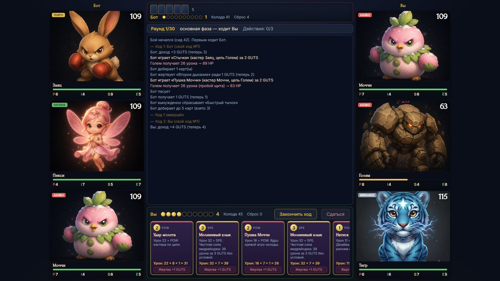
Скриншот прототипа. Бой против бота, сид 42. На каждой карте — предпросмотр урона по формуле из спеки: «Урон: 22 + 8 + 1 = 31».Prototype screenshot. Battle vs the bot, seed 42. Every card previews its damage using the spec formula: “Damage: 22 + 8 + 1 = 31”.
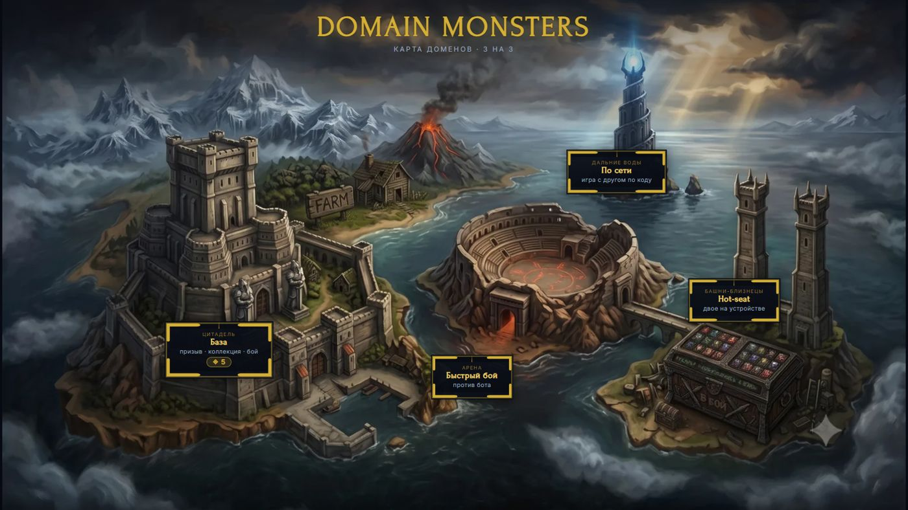
Скриншот. Меню — карта мира: четыре режима как четыре локации.Screenshot. The menu is a world map: four modes as four locations.
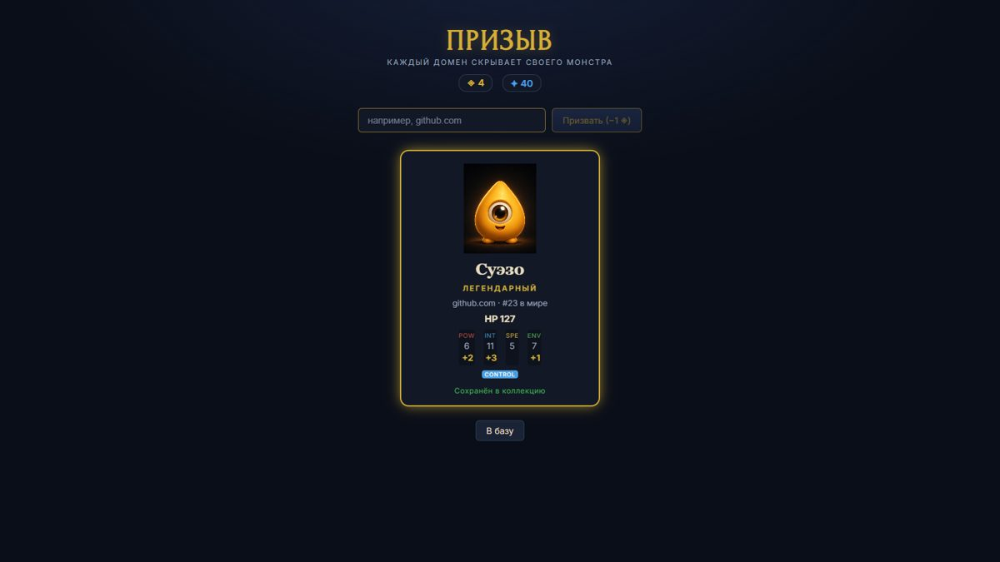
Скриншот. Призыв: github.com → легендарный Суэзо, 23-й сайт в мире.Screenshot. Summon: github.com → legendary Suezo, the world's 23rd site.
Что я задизайнилWhat I designed
Боевую модель: экономика действий GUTS, жертва карт, щиты, статусы и пять архетипов: AGGRO, TEMPO, CONTROL и DEFENSE дают пассивный «чит», пока носитель жив, MIDRANGE — без чита.
Призыв по домену: вид монстра — по категории сайта, редкость — по рангу популярности, бонусы — детерминированно из хэша домена.
Мету первой волны: коллекция, тренировка, открытие видовых карт, две валюты с таблицей faucet/sink, награды за бой, минимальный FTUE.
«Часы колоды»: колода 50 карт и обязательная жертва карты за ход — убрали затяжные партии.
Протокол плейтеста: три сценария на 15–20 минут, что наблюдать молча, вопросы после, метрики и решение go / поворот / no-go.
The battle model: a GUTS action economy, card sacrifice, shields, statuses and five archetypes — AGGRO, TEMPO, CONTROL and DEFENSE grant a passive “cheat” while the holder lives, MIDRANGE has none.
Domain summoning: species from the site's category, rarity from its popularity rank, bonuses derived deterministically from the domain hash.
The first-wave meta: collection, training, unlocking species cards, two currencies with a faucet/sink table, battle rewards, a minimal FTUE.
The “deck clock”: a 50-card deck and a mandatory card sacrifice each turn — removed drawn-out matches.
A playtest protocol: three 15–20 minute scenarios, what to observe silently, follow-up questions, metrics and a go / pivot / no-go decision.
§12Краевые случаи · 2 из 26Edge cases · 2 of 26каждый покрыт тестомeach covered by a test
Одновременный KO. Одна карта с цепной атакой добила последних монстров обеих сторон — побеждает активный игрок.
Simultaneous KO. One chain-attack card finishes the last monsters on both sides — the active player wins.
Щит поверх щита. Меньший щит не ухудшает и не суммируется: shield = max(5, 3) = 5.
Shield over shield. A smaller shield neither weakens nor stacks: shield = max(5, 3) = 5.
Все 6 команд вошли в коридор винрейта 45–55% на трёх независимых сидахAll 6 teams landed in the 45–55% win-rate corridor across three independent seeds
Greedy-бот против greedy-бота: 1000 партий на каждую из 15 пар команд, сиды 7, 42 и 99. Полыми маркерами — до правок.Greedy bot vs greedy bot: 1,000 matches for each of the 15 team pairs, seeds 7, 42 and 99. Hollow markers show the state before the fixes.
после правок v2.3, по сидамafter the v2.3 fixes, per seedдо правокbefore the fixesцелевой коридор 45–55%target corridor 45–55%
Таблица значенийData table
КомандаTeam
сидseed 7
сидseed 42
сидseed 99
до правокbefore
65% → 0%боёв до лимита раундов в худшем матчапе после «часов колоды»of matches hitting the round cap in the worst matchup, after the deck clock
8–11раундов — медиана боя при дизайн-цели 9–12rounds — median match length vs a 9–12 design target
97–100%боёв решаются нокаутом, а не опустевшей колодойof matches end in a knockout, not an empty deck
Шахматы · порт классики 1991 годаChess · a port of a 1991 classic
Battle Chess
Шахматы для Windows в духе классической Battle Chess: 2D-доска, нарисованная кодом, и режим, который кадр в кадр воспроизводит Battle Chess для Macintosh 1991 года — ходьбу фигур, ладью-голема и все сцены поединков.Windows chess in the spirit of the classic Battle Chess: a code-drawn 2D board plus a mode that reproduces the 1991 Macintosh Battle Chess frame for frame — piece walks, the rook golem and every combat scene.
РольRole
дизайн и разработка, личный проектdesign and development, solo project
СтекStack
C#, .NET 9, WinForms; инструменты разбора — PythonC#, .NET 9, WinForms; research tools in Python
РелизRelease
1.0.0, один exe без установки .NET1.0.0, a single exe, no .NET install
Скриншот режима «Battle Chess». Поединок: ферзь берёт пешку — пятый вариант боя для этой пары, собранный по правилам движка оригинала.Battle Chess mode screenshot. A duel: the queen takes a pawn — the fifth fight variant for this pair, assembled by the original engine's rules.
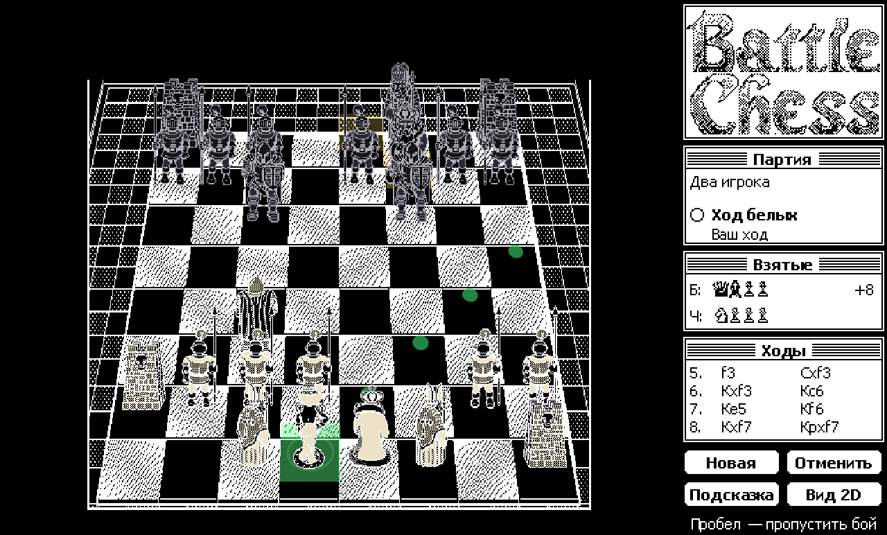
Скриншот. Партия на перспективной доске оригинала, интерфейс в стиле Mac System 6.Screenshot. A game on the original perspective board, with a Mac System 6 style interface.
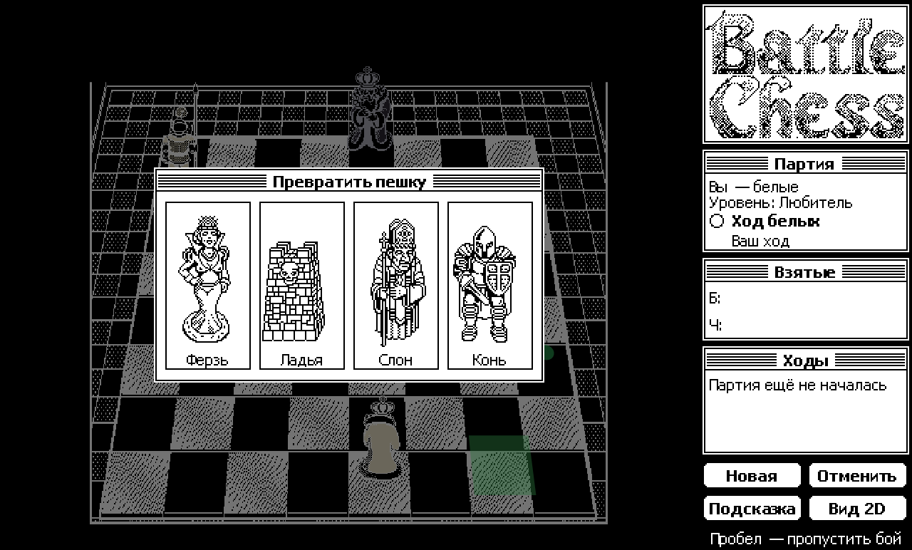
Скриншот. Диалог превращения пешки с картинками из оригинала.Screenshot. The pawn promotion dialog with pictures from the original.
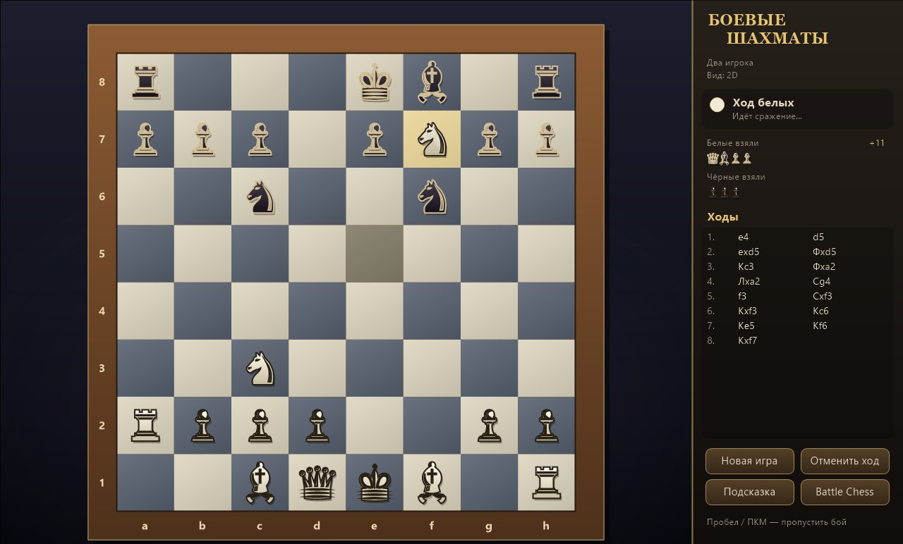
Вид 2D. Фигуры и интерфейс нарисованы кодом, ресурсы оригинала не нужны.2D view. Pieces and UI are drawn in code; no original assets needed.
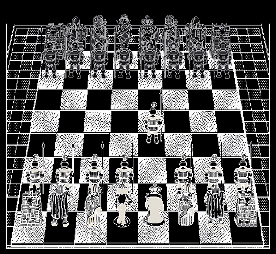
Анимация. Автоповорот доски для двух игроков.Animation. Auto-rotating board for two players.
Все правила шахмат: рокировка, взятие на проходе, превращение пешки, мат, пат и ничьи — по правилу 50 ходов, троекратному повторению и недостатку материала.
Компьютерный соперник: альфа-бета-поиск с итеративным углублением, пять уровней — от «Новичка» до «Гроссмейстера».
Режимы: за белых, за чёрных, два игрока и компьютер против компьютера. Для двух игроков доска с анимацией поворачивается к тому, чей ход.
Порт оригинала: все 35 сцен поединков с таймингом 10 кадров в секунду и звуками исходной высоты; для 26 пар фигур — до 4 дополнительных боёв, собранных по правилам движка оригинала из его же последовательностей.
Инструменты проверки: режимы командной строки проигрывают партии и сохраняют кадры анимаций без окна — графику можно проверять без ручной игры.
Every chess rule: castling, en passant, promotion, checkmate, stalemate and draws by the 50-move rule, threefold repetition and insufficient material.
A computer opponent: alpha-beta search with iterative deepening, five levels from Novice to Grandmaster.
Modes: play as white, as black, two players, or computer vs computer. In two-player mode the board animates round to face whoever moves next.
A port of the original: all 35 combat scenes at the original 10 frames per second with sounds at their original pitch; for 26 piece pairs, up to 4 extra fights assembled by the original engine's rules from its own sequences.
Verification tools: command-line modes play games and capture animation frames headless, so graphics can be checked without playing by hand.
Разбор оригиналаReverse engineering· от образа диска до кадра· from disk image to frameописано в docs/FORMAT.mddocumented in docs/FORMAT.md
Шаг
Что делает
1
извлекает файлы и ресурсы из тома HFS образа диска Macintosh
2
дизассемблирует сегменты кода 68k с именами функций MacsBug
3
распаковывает и разбирает блоки анимаций — позы, циклы ходьбы, звуки
4
симулирует логику поединков оригинала и выгружает 35 сцен покадрово
5
рантайм на C# проигрывает сцены и ходы по правилам движка оригинала
Step
What it does
1
extracts files and resources from the Macintosh disk image's HFS volume
2
disassembles the 68k code segments with MacsBug function names
3
decompresses and parses the animation blocks — poses, walk cycles, sounds
4
simulates the original combat logic and exports all 35 scenes frame by frame
5
a C# runtime plays scenes and moves by the original engine's rules
Ресурсы игры не входят ни в репозиторий, ни в релиз: режим работает только с ресурсами из своей копии игры.
No game assets ship in the repository or the release: the mode only works with assets from your own copy of the game.
Поезд из открытых платформ едет ночью через лес, из темноты лезут твари. Днём — стоянка на станции: заработать, купить, починить и успеть на поезд до отправления.A train of open flatcars rides through a forest at night while creatures crawl out of the dark. By day it stops at a station: earn, buy, repair — and make it back on board before departure.
РольRole
разработка в команде из двух, 88 из 150 коммитовdevelopment in a team of two, 88 of 150 commits
ДвижокEngine
Unity 6, URP
СетьNetwork
Netcode for GameObjects
ВводInput
клавиатура и геймпад, Input Systemkeyboard and gamepad, Input System
ГодYear
2026
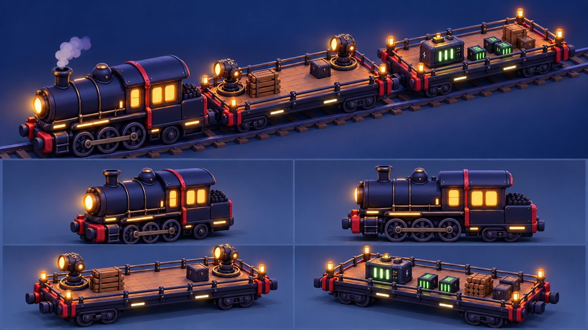
AI-концепт поезда — визуальный референс для команды, не скриншот игры.AI concept art of the train — a visual reference for the team, not a game screenshot.
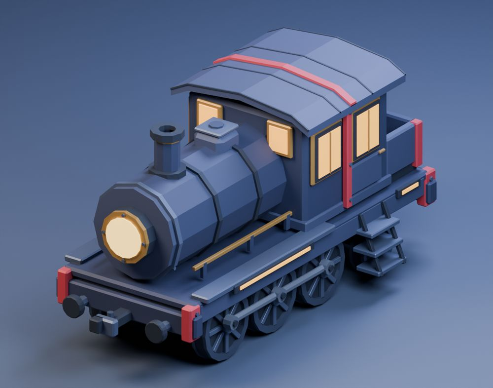
3D-модель паровоза для игры.3D model of the locomotive for the game.
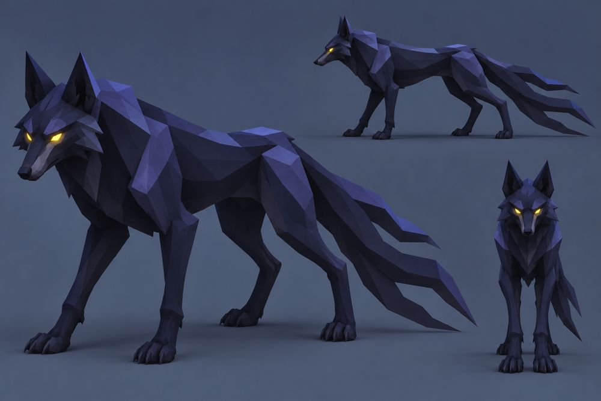
AI-концепт врага: волк.AI concept art of an enemy: the wolf.
Цикл рейсаRun loop
ночь в пути, нападения
→
рассвет
→
стоянка на станции
→
гудок за 15 с
→
отправление
night ride, attacks
→
dawn
→
station stop
→
whistle 15 s ahead
→
departure
Что в игреWhat's in the game
Отправление как напряжение: гудок звучит за 15 секунд до отправления, потом поезд 8 секунд разгоняется — догнать ещё можно. Опоздавший теряет всё из рук и оглушён 15 секунд, напарник может поднять его за 2.
Кооп 1–4 игрока на Netcode for GameObjects: маршрут выбирает хост и рассылает остальным.
Оборудование на платформах ставится по сетке с поворотом: прожектор, генератор, тендер, фонарный столб, лекарь, котёл, дробилка, кран — у каждого своя цена и роль.
Числа в конфигах: все параметры — в ScriptableObject; сцены, префабы и материалы собираются кодом из редактора одной командой.
Departure as tension: the whistle sounds 15 seconds before departure, then the train takes 8 seconds to speed up — you can still catch it. Miss it and you drop everything you carry and are stunned for 15 seconds; a teammate can revive you in 2.
Co-op for 1–4 players on Netcode for GameObjects: the host picks the route and syncs it to everyone.
Flatcar equipment placed and rotated on a grid: searchlight, generator, tender, lamp post, medic, cauldron, crusher, crane — each with its own price and role.
Numbers in config: every parameter lives in ScriptableObjects; scenes, prefabs and materials are generated by an editor tool with one command.
Длительность стоянкиStation stop durationиз документации проектаfrom the project docs
T = (40 + 30 · платформflatcars) × k × s
k = 1 / 0,6 / 0,5 / 0,45 для 1–4 игроков; s = 1 / 1,15 / 1,3 для посёлка, городка и города. Чем больше поезд — тем дольше стоянка, чем больше игроков — тем она короче.
k = 1 / 0.6 / 0.5 / 0.45 for 1–4 players; s = 1 / 1.15 / 1.3 for a village, town and city. A bigger train gets a longer stop; more players get a shorter one.
ОборудованиеEquipment· срез· excerptцены из конфига игрыprices from the game config
ПредметItem
монетыcoins
рольrole
прожекторsearchlight
8
сам наводится и жжёт тварей, питается от батарейaims itself and burns creatures, runs on batteries
генераторgenerator
14
запас батарей для прожекторовstores batteries for the searchlights
тендерtender
6
уголь и вода; может укоротить ночьcoal and water; can shorten the night
фонарный столбlamp post
10
круг света — безопасный участок платформыa circle of light — a safe patch of the flatcar
лекарьmedic
18
ночью лечит в радиусе 2,5 мheals within 2.5 m at night
котёлcauldron
15
грибы + травы → похлёбкаmushrooms + herbs → stew
Симулятор управления · колони-симManagement sim · colony sim
ВерфьShipyard
Космическая верфь: принимаешь корабли на ремонт, решаешь, чинить узел в цеху или купить готовый, нанимаешь специалистов и достраиваешь станцию, не уходя в банкротство.A space shipyard: take ships in for repair, decide whether to fix a part in the workshop or buy a new one, hire specialists and grow the station without going bankrupt.
Рост станции: комнаты, секции корпуса 3×3, снос с возвратом 20%, найм под койки.
A decision at the heart of the loop: repair is cheaper but ties up a workshop and a specialist; buying is fast but drives you into a loss if you rely on it.
Shared capacity limits: the crane, the logistician, workshops and specialists are split across orders.
Systems for depth: fatigue, defects from tired specialists, a test bench, delayed warranty penalties.
Station growth: rooms, 3×3 hull sections, demolition with a 20% refund, hiring tied to bunks.
ДокументыProject documentsподдерживаются вместе с кодомmaintained alongside the code
GDD
концепция, экономика, кран, корпус, персонал, рост, мир, отброшенные идеи
Тех-спек v1
модель состояния, команды, константы, формулы, порядок тика
state model, commands, constants, formulas, tick order
Patch 00
station construction, expansion, demolition, housing
Patch 01
production model revision, options A / B / C
Ни одного банкротства на старте после правки выдачи заказов и ценZero early bankruptcies after reworking order arrival and prices
20 сидов × 90 игровых дней на каждую стратегию автоигрока. Корабль приходит того класса, который станция способна обслужить; перенастроены награда и цены замен.20 seeds × 90 in-game days per autoplayer strategy. Ships now arrive in a class the station can service; rewards and replacement prices were retuned.
Стартовая стратегияStarting strategy
банкротств из 20bankruptcies of 20
сдано кораблейships delivered
простой причаловidle docks
ремонт без испытанийrepair, no testing
5 → 0
17.8 → 89.5
90.2% → 54.4%
испытание каждого корабляtest every ship
8 → 0
16.3 → 85.7
83.5% → 36.4%
покупка заменbuy replacements
12 → 0
16.4 → 89.5
96.2% → 83.4%
10 из 10 прогонов на 180 дней без банкротств дошли до фрегатов и сухогрузов, первый фрегат — около 137-го дня. Открытый вопрос: испытательный стенд всё ещё невыгоден как первая постройка.10 of 10 180-day runs reached frigates and freighters without bankruptcy; the first frigate arrives around day 137. Open question: the test bench is still a poor first build.
Детектив Майя касается потерянного предмета и видит его прошлое. Каждый эпизод — отдельное дело: вернуть ли предмет владельцу и восстановить ли правду.Detective Maya touches a lost object and sees its past. Each episode is a separate case: whether to return the object to its owner, and whether to restore the truth.
РольRole
концепция, нарративный и технический дизайнconcept, narrative and technical design
Арт прототипа. Катсцена-хук эпизода 2 «Компас смотрителя маяка».Prototype art. Hook cutscene of episode 2, “The Lighthouse Keeper's Compass”.
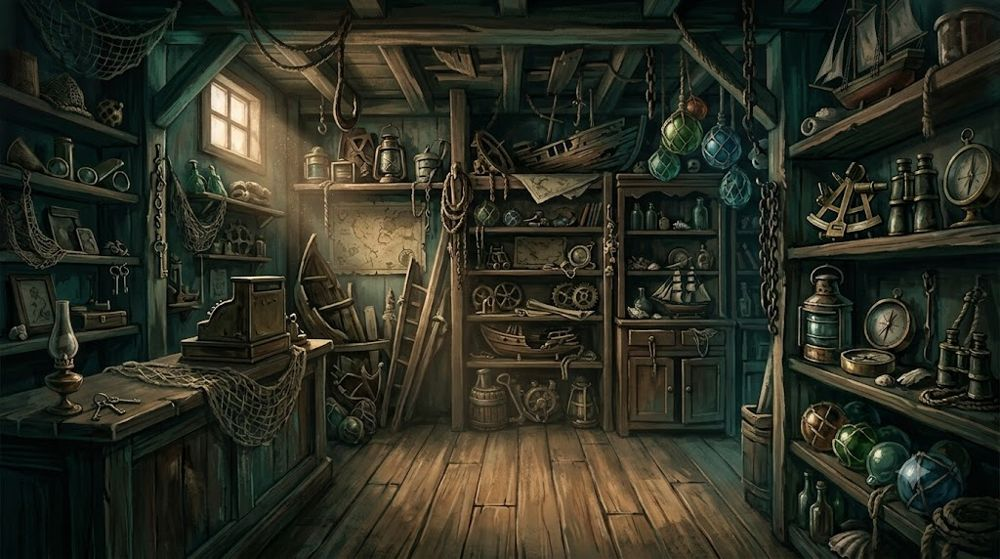
Арт прототипа. Сцена «лавка диковин».Prototype art. The curio shop scene.
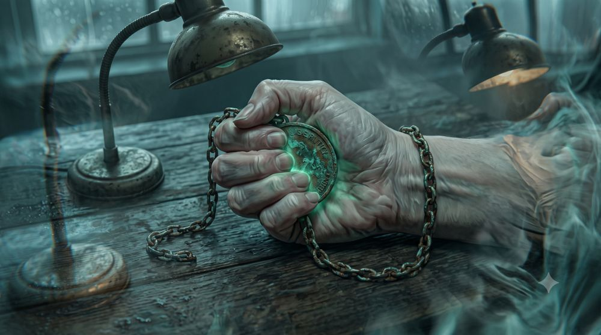
Арт прототипа. Медальон — механика «Зрения».Prototype art. The medallion — the “Sight” mechanic.
Формула эпизодаEpisode formula
потерянный предмет
→
видение
→
опознание владельца
→
починка
→
расследование
→
дело: 3 исхода
lost object
→
vision
→
identify the owner
→
repair
→
investigation
→
case: 3 outcomes
Что я задизайнилWhat I designed
Кейс-модуль как механику: улики из видения, опознание, вмешательства с условиями и лесенка исходов — дедукция встроена в данные.
Двухосную мораль: вернуть предмет и восстановить правду — две независимые оси, поэтому «цена» ощущается половиной победы.
Инструменты для авторов: конструктор условий и эффектов, линтер тупиков расследования, экспорт локализации в CSV.
A case module as a mechanic: clues from the vision, identification, conditional interventions and an outcome ladder — deduction is built into the data.
Two-axis morality: returning the object and restoring the truth are independent, so the “costly” ending feels like half a win.
Authoring tools: a condition and effect builder, a linter for investigation dead ends, localisation export to CSV.
вернуть компас и очистить имя Лючии, не продав компас коллекционеру
с ценой
вернуть компас или очистить имя
провал
всё остальное
Outcome
Condition
ideal
return the compass and clear Lucia's name, without selling the compass to the collector
costly
return the compass or clear her name
failure
anything else
Перед проектированием редактора — разбор 7 референсных движковBefore designing the editor: a teardown of 7 reference engines
Как пишется логика, ловит ли инструмент ошибки до запуска и как быстро проверить сцену.How logic is authored, whether the tool catches errors before running, and how fast a scene can be tested.
ДвижокEngine
Логика и состояниеLogic and state
Проверка до запускаPre-run checks
ПлейтестPlaytest
ВердигриVerdigri
условия и эффекты в данныхconditions and effects as data
богатый линтерrich linter
симуляция на движке, headlessengine simulation, headless
СпекаПравила, модель данных, краевые случаи, таблица констант и список «дефолты к пересмотру».
ПрототипСамая дешёвая проверка: цепляет ли ядро, до вложений в мету и арт.
Симуляция и плейтестБоты и тысячи прогонов — на числа, живые люди — на ощущения и понятность.
Отчёт«Было → стало» по метрикам, остаточные риски, что не трогал и почему.
РешениеПравка спеки и констант; спорное — в открытые вопросы.
SpecRules, data model, edge cases, a constants table and a list of “defaults to revisit”.
PrototypeThe cheapest check: does the core hook players, before investing in meta and art.
Simulation and playtestBots and thousands of runs for the numbers, real people for feel and clarity.
Report“Before → after” on metrics, remaining risks, what I left alone and why.
DecisionUpdate the spec and constants; anything contentious goes into open questions.
Не накапливать вложения поверх непроверенного фана. Плейтест — самая дешёвая страховка от постройки небоскрёба на песке.из протокола плейтеста Domain MonstersDon't stack investment on top of unproven fun. A playtest is the cheapest insurance against building a skyscraper on sand.from the Domain Monsters playtest protocol